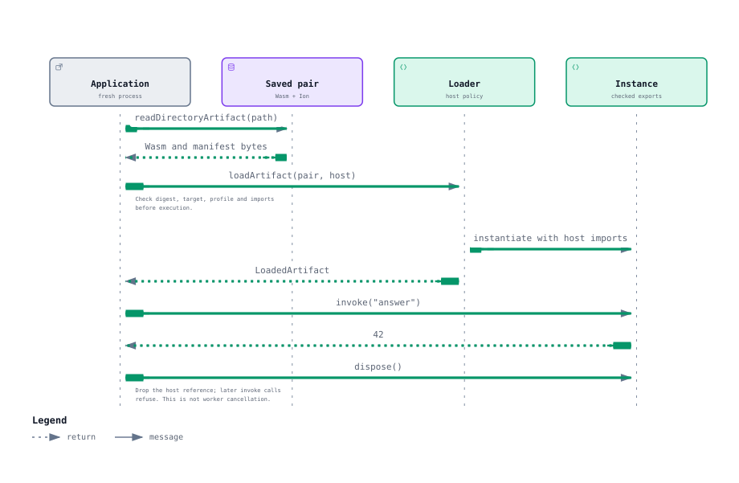

Start with a supported Morphir model, generate MoonBit source, compile its complete library graph, and save the resulting WebAssembly module with an Ion manifest. A compatible host can then load that saved pair and invoke its exports. The runtime deployment needs the compiler only if it also compiles code.
This guide explains the supplied-dependency assembly path implemented in Morphir's host libraries. It is intended for application developers, host integrators and contributors. It describes library APIs and their contracts; the reproduction command below runs the maintained qualification example.
Generation and assembly are separate stages. The generator preserves the model's semantics and emits MoonBit packages. Assembly supplies all the libraries those packages use, compiles them in dependency order, and links the requested exports into a Wasm module. Publication saves that module and its description as one artifact. Loading checks the saved artifact before the host instantiates it.
MoonBit source can enter directly at the assembly stage. A Morphir model remains the semantic pipeline value; an assembly plan and a published artifact are separate build products with their own identities.
Suppose you maintain a pricing model and want to use its calculation in another application. In the
maintained example, pricing:scalars#huge returns 40 and pricing:other#total adds 2
through the Morphir SDK. The model contains three modules, including a private module. The production
generator turns those modules into a MoonBit library; a small driver exposes answer(), which
returns 42, and other entry points used to check cross-module behavior and initialization.
Your build supplies that generated library, the driver and every referenced SDK and core package.
The embedded compiler receives their exact source or prebuilt assets. It does not search your machine for
an installed compiler or invent a missing dependency. After compilation and linking, your build publishes
model.wasm and manifest.ion as one saved pair.
The consuming application can start in a fresh process, read that pair and supply the declared host
imports. In this example the host provides qualification.init, which observes initialization.
Loading runs initialization once; repeated answer() calls return 42. The consumer does not
need to regenerate source or invoke the MoonBit compiler. It does need the loader, its runtime assets and
a Wasm engine supporting the artifact's target and instructions.
This is a library API workflow. The example below makes it reproducible; it is not a claim that an installed CLI already offers a single command for every stage.
Begin with an explicit set of packages and an exact root package. Include every referenced library and its transitive dependencies, including the matching Morphir SDK and MoonBit core assets. Registry resolution and download are the dependency provider's responsibility; the assembly planner consumes the supplied set.

A shared library appears once in the graph even when several packages import it. The diagram groups packages to show responsibilities; the actual request retains each package's own identity and imports. A missing SDK dependency must fail before tree shaking, even if the optimizer could remove its callers.
A package pin combines its canonical MoonBit package path with a SHA-256 content identity. Each import records an alias and an exact dependency pin. Aliases belong to the importing package, so different packages can use different aliases for the same dependency.
| Input | What to supply |
|---|---|
| Source package | Its source files, role and exact dependency pins. |
| Prebuilt package | Its compiled core and interface, target, compiler/core/SDK identity and optimization setting. |
| Assembly request | The root pin, all supplied packages, target, compiler/core/SDK identity, explicit exports and optimization setting. |
The planner validates every supplied package, including packages whose code might later be eliminated. It refuses duplicate identities or aliases, malformed names or digests, missing dependencies, mismatched pins and cycles. Diagnostics identify the referring package and requested dependency. A shared dependency appears once in the deterministic build order; reordering the inputs does not change that order.
A hash identifies content. It does not authenticate its author or grant permission to execute it.
The pure MoonBit planner performs graph validation and ordering without filesystem, network or compiler effects. The asynchronous compiler adapter verifies actual supplied bytes against their pins, checks compiler/core/SDK and target compatibility, and performs compilation.
For each source package, the adapter supplies the direct, indirect and standard interfaces required by the compiler. It reuses verified prebuilt assets for compatible dependencies. After the packages are ready, it links the required compiled cores once and retains the requested public exports and required initialization.
The embedded compiler provider performs these build and link operations. A compile failure or cancellation stops the build before successful artifact publication. Diagnostics retain their package context.
At the API boundary, executeAssembly consumes an AssemblyRequest and returns an
AssemblyResult. The result records the Wasm bytes, complete package evidence, identities,
exports, diagnostics and optimization setting. It is then ready for artifact preparation.
A Wasm file needs enough context for another host to check and use it. Artifact preparation builds a manifest from the assembly result, inspects the actual Wasm imports and exports, and records the execution-profile identity. Binary Ion is the default manifest encoding; a checked JSON representation is an explicit alternative.
| Manifest information | Purpose |
|---|---|
| Schema and origin | Identify the manifest format and source model revision/hash or MoonBit source hash. |
| Artifact | Record the Wasm hash, size and target. |
| Assembly | Preserve the full supplied graph, exact pins, aliases, build order, source/prebuilt forms and compiler/core/SDK identities. |
| Invocation | Record the core-Wasm ABI, execution profile, retained exports and actual imports. |
| Optimization | Record the chosen source/link setting and each package's actual setting. |
The current schema is morphir-assembly-artifact-v1-draft. It is a local draft format, independent
of the Morphir IR format version. Treat changes to this manifest as compatibility changes rather than assuming
it is a stable public interchange standard.
The Node directory store writes model.wasm and manifest.ion, or the explicitly selected
manifest.json, into a staging directory. It publishes the complete pair by renaming the directory.
An exclusive cooperative-writer lock coordinates publishers; an existing destination is refused. Failed writes
attempt staging cleanup, and cleanup failure remains visible alongside the original error. A crash can leave
a publication lock that must be inspected before recovery.
Read the saved Wasm/manifest pair and supply the host's supported targets, exact execution-profile identities, manifest encodings and import bindings. The loader checks the manifest, Wasm digest and size, graph consistency, declared profile and actual imports/exports. It checks Wasm instruction support by compiling the module before instantiation, then verifies required host bindings before executing initialization.
This separates runtime compatibility from the build environment. A fresh host needs the artifact, manifest and declared runtime services. It does not need the original compiler process, its build cache, or an installed compiler command. The existing loader can run without the packaged compiler payload.
Successful loading exposes the retained functions through the loaded artifact's invocation interface. The host owns the instance's lifetime and disposal. Unsupported targets, profiles, encodings or imports produce compatibility failures before instantiation; altered Wasm bytes produce integrity failures.

Disposal drops the loader's reference and makes later invocations fail. It does not interrupt a synchronous export that is already running. Put untrusted or potentially nonterminating work behind a host boundary that can enforce its limits. The byte-profile worker hosts provide a separate lifecycle; the direct scalar loader shown here does not itself provide a deadline.
An execution profile identifies the contract between a guest's libraries and its host: the ABI, allowed services, codecs and Wasm requirements. Keep the profile identity separate from concrete compiler, core and library content hashes. Two hosts can implement the same contract with different implementations.
A host must explicitly support the saved artifact's profile and provide its required imports. Adding a host service such as diagnostics changes that contract. A runtime that supports ordinary core Wasm is not thereby qualified for every host interface or for WebAssembly components.
The production codec-adapter example exercises baseline and diagnostics profiles using the same assembly, publication and loader components. It demonstrates a bounded profile variation, rather than an arbitrary matrix of independently selectable capabilities.
Validate the full dependency graph before eliminating unused code. Retention roots include the requested exports, required initialization and explicitly registered indirect entry points. Dynamic discovery needs explicit roots or a deliberately conservative policy.
Linker elimination can reduce deployed code while the manifest still records the complete supplied graph. Keep both facts: the graph explains what was built, while the Wasm bytes show what was retained. Compare optimization settings using the same source and dependency identities, and check behavior and initialization as well as size. An unoptimized setting does not promise that every elimination pass is disabled.
From a configured repository checkout, run the maintained generated-library qualification:
mise run test:assemblyThe fixture generates a real three-module Morphir model with a cross-module reference and an SDK addition call. It supplies the generated packages, the SDK root/integer/list/basics source packages and their pinned core closure. It compiles through the packaged provider, saves Wasm and binary Ion, then invokes the saved artifact in separate fresh Node processes.
Preparation uses Moon to generate the fixture and obtain dependency/build recipes. The actual package
compilation uses the embedded provider with an empty PATH and no MOON_HOME.
The task writes its report to .dev/assembly-qualification-report.json and prints the temporary
workspace path. Successful temporary publications are removed after consumption;
failed workspaces are retained for diagnosis.
A fresh run on 22 October 2026 with compiler 0.10.16+b1a0e846e supplied 42 packages,
including 36 core packages. It produced 17,494-byte optimized and 18,742-byte unoptimized artifacts;
both returned the expected values and initialized once in fresh Node processes. The graph size changes
with the pinned core, so reproduce the result with the checked toolchain rather than treating these sizes
or package counts as an interface contract.
The 18 October 2026 qualification used compiler 0.10.15+943464bfa and a supplied graph of 44 packages,
including 38 pinned core packages. These are historical measurements, not a required current toolchain or a
size guarantee. Use the repository's current pinned toolchain for reproduction.
| Source/link setting | Wasm size | Observed behavior |
|---|---|---|
| Optimized | 17,282 bytes | Answer 42, cross-module result 40, Boolean true, initialization exactly once. |
| Unoptimized | 18,476 bytes | The same results in a separate fresh process; initialization exactly once. |
Both settings removed a deliberately unreachable payload and used the same already optimized prebuilt core. The fixture also refused a missing SDK package and corrupted core bytes. These results qualify that fixture and host configuration.
The full generated-library SDK/core path has been demonstrated in Node. Simpler dependency assembly and binary Ion loading have also been exercised in Chromium. The complete generated-library fixture's Node result does not establish every browser, native host or compiler embedding configuration.
This path produces core Wasm. WebAssembly Component Model support additionally requires a compatible component interface, ABI and actual host/runtime integration. Likewise, loading an artifact does not by itself establish MEP negotiation, installed CLI integration or conformance through the shared MCK.
Production codec adapters can reuse the assembly path behind the existing MCK process boundary. That adapter's codec and lifecycle evidence remains scoped to its tested profile and host. Registry solving, native compiler embedding and further component/MEP hosting remain separate integration work.
When a build fails, first locate the stage that owns the failed contract. A missing package is a graph problem; incompatible prebuilt assets or a compiler mismatch are build-input problems. A digest mismatch or an undeclared import at load time is a saved-artifact or host-compatibility problem. Moving one of these checks into every frontend or transport adapter would make their behavior harder to keep consistent.
| Responsibility | Implementation | What a contributor should preserve |
|---|---|---|
| Validate and order the complete supplied graph | pkgs/morphir-host/assembly/plan.mbt | Pure decisions, exact identities, deterministic order and useful dependency diagnostics. |
| Verify assets, compile packages and link exports | pkgs/morphir-host/embedding/assembly.mts | Provider compatibility, complete direct/transitive interfaces and retention roots. |
| Describe and check the saved pair | pkgs/morphir-host/embedding/artifacts.mts | Ion metadata, exact bytes, declared ABI/imports/exports and host compatibility before execution. |
| Publish and read filesystem artifacts | pkgs/morphir-host/embedding/node-artifacts.mts | Whole-pair publication, private staging cleanup and compiler-free reads. |
| Prove source-to-saved-library behavior | pkgs/morphir-host/embedding/test/generated.mts | Real SDK/core inputs, fresh-process execution, failures, initialization and optimization equivalence. |
Start with the smallest check that exercises your change. Use mise run test:assembly for the
complete generated-library path and mise run test:embedding for the host API suite.
mise run test:wasm-hosts checks a separate real Component Model fixture in reference and adapted
hosts. A passing component fixture does not add a component binding to the production CLI.
Diagram sources live beside their static SVGs in docs/diagrams/wasm-library-assembly/.
Keep source and rendering consistent when changing a contract. The diagrams are readable without
JavaScript; the narrative states the same responsibilities and lifecycle in words.